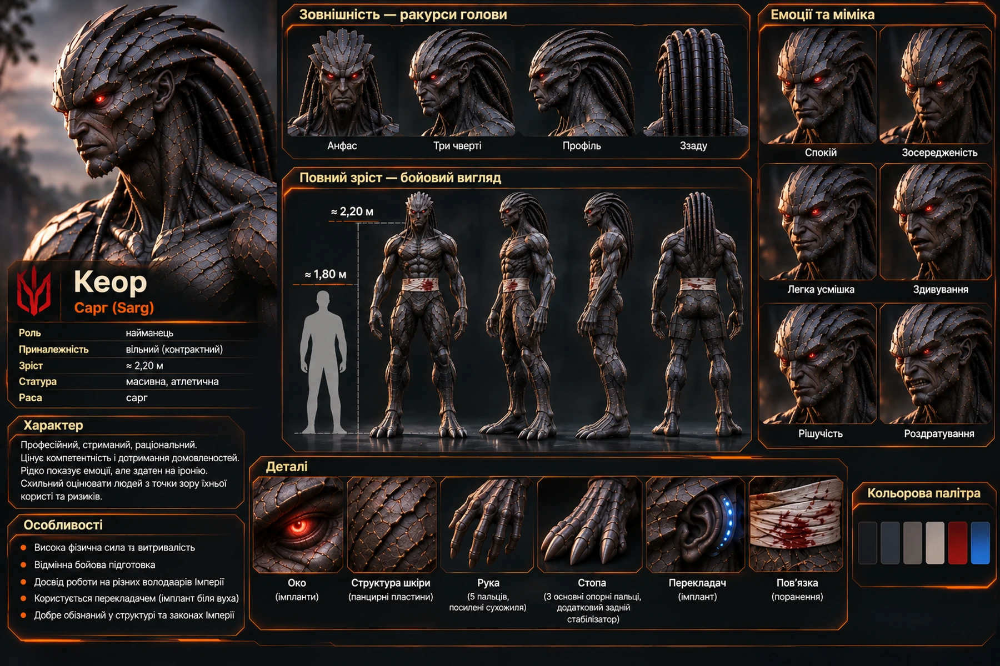

ОСНОВНА ІНФОРМАЦІЯ
Найманець із раси саргів
Кеор належить до саргів — розумної гуманоїдної раси, поширеної на багатьох Планах Імперії. Він працює найманцем і виконує завдання за контрактом.
Раса: сарг (Sarg)
Статус: найманець
Належність: Імперія
Роль: учасник контрактних військових місій
ХАРАКТЕР І ПРИНЦИПИ
Професіонал передусім
Кеора не цікавить, хто має рацію в конфлікті й заради чого воюють сторони. Він найманець: отримує завдання, виконує його й оцінює результат. Особистої ворожнечі до тих, хто опинився по інший бік місії, він не відчуває, якщо контракт уже завершено.
Він помічає компетентність і поважає вміння діяти. Побачивши тактику людей у бою, Кеор щиро зацікавився їхнім способом ведення війни та навіть запропонував Дмитрові приєднатися до команди найманців.
ЗУСТРІЧ ІЗ ДМИТРОМ
Місія завершена
Після невдалого завершення завдання Кеор опиняється далеко від військової бази, тяжко поранений. Дмитро, який міг просто піти далі, вирішує йому допомогти. Для Кеора це змінює характер їхньої зустрічі: Дмитро більше не сприймається як ворог.
Під час розмови Кеор розповідає про Імперію, її устрій, князя, який править кількома Планами, та правила переходів. Він дивується, що Дмитро не має перекладача, і спершу вважає його представником світу, далекого від імперської культури.
ЗОВНІШНІСТЬ
Кеор — сарг із характерною для раси не людською фізіологією: щільною шкірою, що утворює перекривні панцирні пластини, видовженою головою з кістковими гребенями та червоними очима. Його статура масивна й атлетична. У бойовій броні силует стає ще важчим, але не перетворює його на людину в обладунку.